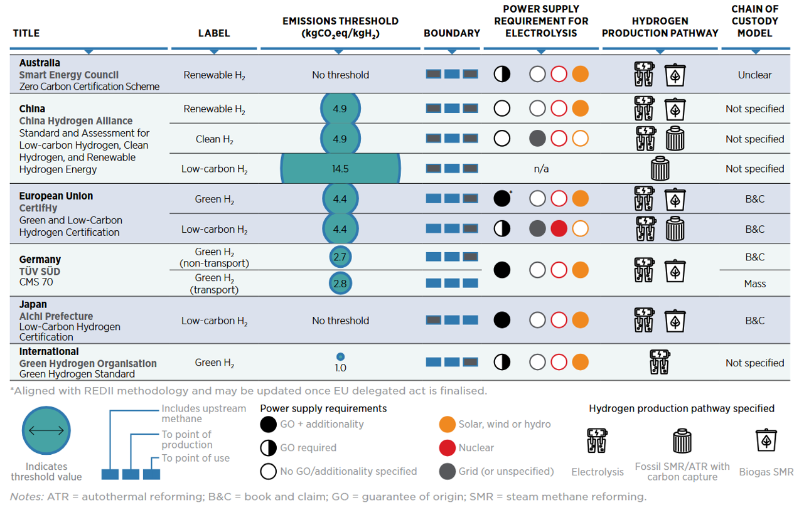
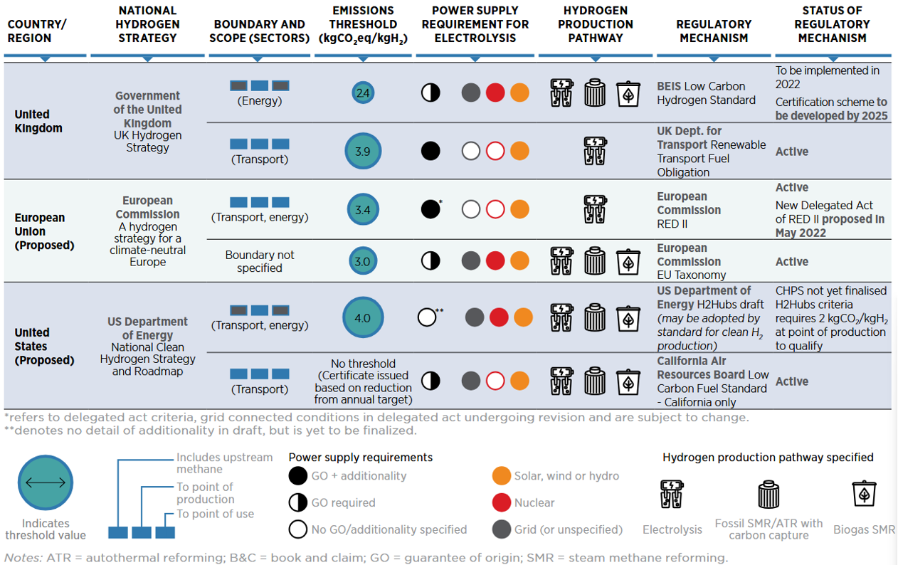

CAPÍTULO 9 FIGURAS
Figura ??

Figura ??

Na Tabela 9.1
| Tipo de Motor Primário | Combustível | Eficiência (%) | Emissões | Tempo de Partida | Aplicações |
|---|---|---|---|---|---|
| Motor de Combustão Interna | Gás Natural | 25 – 40 | Moderadas | Moderado | Comerciais |
| Turbina a gás | Gás Natural | 25 – 35 | Elevadas | Moderado | Longa escala |
| Motor Stirling | Biomassa | 15 – 30 | Moderadas | Alto | Equipamentos CHP solares |
| FC tipo PEM | H₂ | 45 – 60 | Elevado vapor produzido | Mínimo | Tecnologias avançadas |
| Ciclo Orgânico Rankine (ORC) | Calor residual | 10 – 25 | Baixas | Muito alto | Recuperação de calor residual |